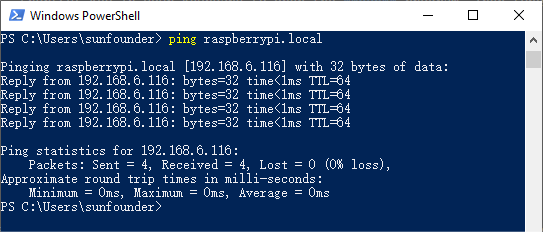

Nota
¡Hola, bienvenido a la comunidad de entusiastas de SunFounder Raspberry Pi, Arduino y ESP32 en Facebook! Sumérgete más profundamente en Raspberry Pi, Arduino y ESP32 con otros entusiastas.
¿Por qué unirse?
Soporte experto: Resuelve problemas postventa y desafíos técnicos con la ayuda de nuestra comunidad y equipo.
Aprende y comparte: Intercambia consejos y tutoriales para mejorar tus habilidades.
Vistas previas exclusivas: Obtén acceso anticipado a anuncios de nuevos productos y avances.
Descuentos especiales: Disfruta de descuentos exclusivos en nuestros productos más recientes.
Promociones festivas y sorteos: Participa en sorteos y promociones de temporada.
üëâ ¬øListo para explorar y crear con nosotros? Haz clic en [Aqu√≠] y únete hoy mismo.
Para Usuarios de Windows
Para los usuarios de Windows 10 o superior, el inicio de sesión remoto en un Raspberry Pi se puede lograr a través de los siguientes pasos:
Busca
powershellen tu cuadro de búsqueda de Windows. Haz clic derecho enWindows PowerShelly seleccionaEjecutar como administrador.
Determina la dirección IP de tu Raspberry Pi escribiendo
ping -4 <hostname>.localen PowerShell.ping -4 raspberrypi.local
La dirección IP de la Raspberry Pi se mostrará una vez que esté conectada a la red.
Si el terminal muestra
Ping request could not find host pi.local. Please check the name and try again., verifica que el nombre de host ingresado sea correcto.Si aún no puedes obtener la dirección IP, revisa la configuración de tu red o WiFi en la Raspberry Pi.
Una vez confirmada la dirección IP, inicia sesión en tu Raspberry Pi usando
ssh <username>@<hostname>.localossh <username>@<IP address>.ssh pi@raspberrypi.local
Advertencia
Si aparece un error que indica
The term 'ssh' is not recognized as the name of a cmdlet..., es posible que tu sistema no tenga las herramientas SSH preinstaladas. En este caso, necesitas instalar OpenSSH manualmente siguiendo Instalar OpenSSH a través de PowerShell, o usar una herramienta de terceros como se describe en PuTTY.Aparecerá un mensaje de seguridad en tu primer inicio de sesión. Introduce
yespara continuar.The authenticity of host 'raspberrypi.local (2400:2410:2101:5800:635b:f0b6:2662:8cba)' can't be established. ED25519 key fingerprint is SHA256:oo7x3ZSgAo032wD1tE8eW0fFM/kmewIvRwkBys6XRwg. Are you sure you want to continue connecting (yes/no/[fingerprint])?
Introduce la contraseña que configuraste previamente. Ten en cuenta que los caracteres de la contraseña no se mostrarán en la pantalla, lo cual es una característica de seguridad estándar.
Nota
La ausencia de caracteres visibles al escribir la contraseña es normal. Asegúrate de ingresar la contraseña correcta.
Una vez conectado, tu Raspberry Pi estará lista para operaciones remotas.
{kind=link}
{kind=link}